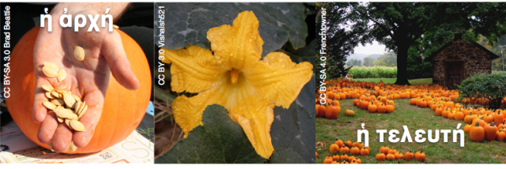
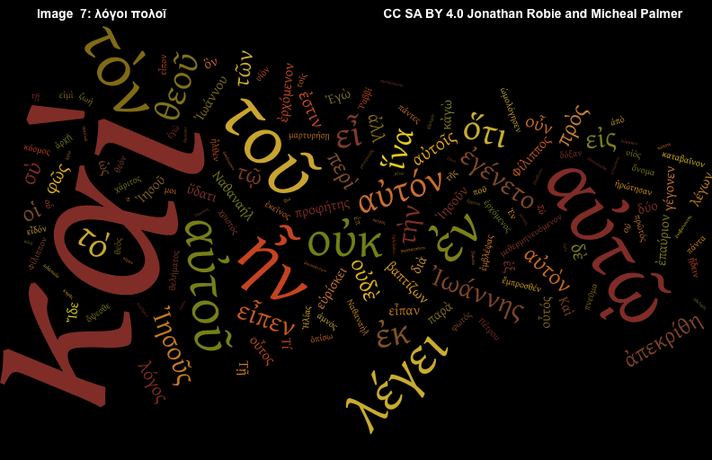
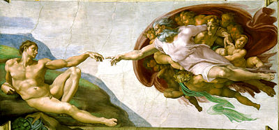

Ἐν ἀρχῇ ἦν ὁ λόγος,
καὶ ὁ λόγος ἦν πρὸς τὸν θεόν,
καὶ θεὸς ἦν ὁ λόγος.
οὗτος ἦν ἐν ἀρχῇ πρὸς τὸν θεόν.
Ἐν ἀρχῇ ἦν ὁ λόγος
Ἐν ἀρχῇ ἦν ὁ λόγος
ἀρχῇ
ἡ ἀρχή

ἡ ἀρχή / ἡ τελευτή
ἡ ἀρχή / ἡ τελευτή

ἀρχῇ ἢ τελευτή;

ἀρχῇ ἢ τελευτή;

Ἐν ἀρχῇ ἦν ὁ λόγος
Ἐν
Ἐν τελευτή
Ἐν ἀρχῇ
Ἐν ἀρχῇ ἦν ὁ λόγος
ἦν
ἦν - was
ἐστίν - is
Ἐν ἀρχῇ ἦν ὁ λόγος
ὁ λόγος
ὁ λόγος
नमस्ते
ὁ λόγος
Слухаю
ὁ λόγος
喂
οἱ λόγοι
τίς;
Ἐν ἀρχῇ ἦν ὁ λόγος
τίς ἦν ἐν ἀρχῇ;
ὁ λόγος ἦν ἐν ἀρχῇ.
καὶ ὁ λόγος
ἦν πρὸς τὸν θεόν
καὶ ὁ λόγος ἦν πρὸς τὸν θεόν
καί
1 + 1
καὶ ὁ λόγος ἦν πρὸς τὸν θεόν
πρός
καὶ ὁ λόγος ἦν πρὸς τὸν θεόν
θεός
ὁ θεός

τίς;
θεὸς ἢ ἄνθρωπος;
καὶ ὁ λόγος ἦν πρὸς τὸν θεόν
τίς ἦν πρὸς τὸν θεόν;
ὁ λόγος ἦν πρὸς τὸν θεόν.
πρὸς τίνα;
καὶ ὁ λόγος ἦν πρὸς τὸν θεόν
πρὸς τίνα ἦν ὁ λόγος;
πρὸς τὸν θεόν ἦν ὁ λόγος.
Ἐν ἀρχῇ ἦν ὁ λόγος,
καὶ ὁ λόγος ἦν πρὸς τὸν θεόν,
καὶ θεὸς ἦν ὁ λόγος.
οὗτος ἦν ἐν ἀρχῇ πρὸς τὸν θεόν.
καὶ θεὸς ἦν ὁ λόγος
θεὸς ἦν ὁ λόγος
ἢ ἄνθρωπος ἦν ὁ λόγος;
θεὸς ἦν ὁ λόγος
οὗτος ἦν ἐν ἀρχῇ πρὸς τὸν θεόν
οὗτος
οὗτος
ἐκεῖνος
τίς;
οὗτος ἦν ἐν ἀρχῇ πρὸς τὸν θεόν
τίς ἦν ἐν ἀρχῇ πρὸς τὸν θεόν;
οὗτος ἦν ἐν ἀρχῇ πρὸς τὸν θεόν.
ὁ λόγος ἦν ἐν ἀρχῇ πρὸς τὸν θεόν.
πρὸς τίνα;
οὗτος ἦν ἐν ἀρχῇ πρὸς τὸν θεόν
πρὸς τίνα ἦν ὁ λόγος ἐν ἀρχῇ;
πρὸς τὸν θεόν ἦν ὁ λόγος ἐν ἀρχῇ.
πότε;
οὗτος ἦν ἐν ἀρχῇ πρὸς τὸν θεόν
πότε ἦν ὁ λόγος πρὸς τὸν θεόν;
ἐν ἀρχῇ ἦν ὁ λόγος πρὸς τὸν θεόν.
Ἐν ἀρχῇ ἦν ὁ λόγος
πότε ἦν ὁ λόγος;
ἐν ἀρχῇ ἦν ὁ λόγος.
Ἐν ἀρχῇ ἦν ὁ λόγος,
καὶ ὁ λόγος ἦν πρὸς τὸν θεόν,
καὶ θεὸς ἦν ὁ λόγος.
οὗτος ἦν ἐν ἀρχῇ πρὸς τὸν θεόν.